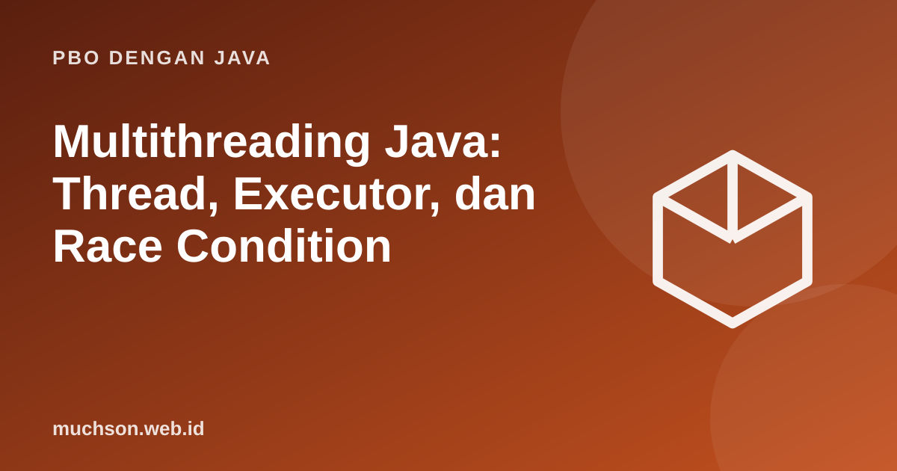

Beranda › Artikel › PBO dengan Java
PBO dengan JavaMultithreading Java: Thread, Executor, dan Race Condition
Menjalankan banyak pekerjaan sekaligus meningkatkan responsivitas dan memakai banyak inti CPU, tetapi memperkenalkan jenis bug yang sulit: hasil yang berubah-ubah dari satu proses ke proses berikutnya. Materi ini memperagakan bug itu, lalu memperbaikinya dengan alat standar.
Sebaiknya sudah paham: PBO Java dasar, lambda

Setelah membaca dan mencoba materi ini, Anda mampu:
- membuat dan menjalankan thread, serta menunggu hasilnya dengan join
- menjelaskan race condition dan memperagakannya
- memperbaiki dengan synchronized dan AtomicInteger
- memakai ExecutorService dan Future
- menjelaskan deadlock dan cara menghindarinya
Thread pertama
public class Main {
public static void main(String[] args) throws InterruptedException {
Thread t = new Thread(() -> System.out.println("dari thread: " + Thread.currentThread().getName()));
t.setName("pekerja-1");
t.start(); // jalankan secara bersamaan; JANGAN memanggil run() langsung
t.join(); // tunggu t selesai
System.out.println("kembali ke " + Thread.currentThread().getName());
}
}dari thread: pekerja-1
kembali ke main
Race condition
Operasi hitung++ tampak satu langkah, padahal terdiri dari tiga: baca, tambah, tulis. Dua thread dapat sama-sama membaca nilai lama sebelum salah satunya menulis, sehingga satu penambahan hilang.
public class Main {
static int hitung = 0;
public static void main(String[] args) throws InterruptedException {
Runnable kerja = () -> { for (int i = 0; i < 100_000; i++) hitung++; };
Thread a = new Thread(kerja), b = new Thread(kerja);
a.start(); b.start();
a.join(); b.join();
System.out.println("diharapkan 200000, hasil lebih kecil dari itu? " + (hitung < 200_000));
}
}diharapkan 200000, hasil lebih kecil dari itu? true
Perbaikan 1: synchronized
public class Main {
private static int hitung = 0;
private static final Object kunci = new Object();
static void tambah() {
synchronized (kunci) { hitung++; } // hanya satu thread pada satu waktu
}
public static void main(String[] args) throws InterruptedException {
Runnable kerja = () -> { for (int i = 0; i < 100_000; i++) tambah(); };
Thread a = new Thread(kerja), b = new Thread(kerja);
a.start(); b.start(); a.join(); b.join();
System.out.println(hitung);
}
}200000
Perbaikan 2: kelas atomik
import java.util.concurrent.atomic.AtomicInteger;
public class Main {
public static void main(String[] args) throws InterruptedException {
AtomicInteger hitung = new AtomicInteger();
Runnable kerja = () -> { for (int i = 0; i < 100_000; i++) hitung.incrementAndGet(); }; // satu operasi atomik
Thread a = new Thread(kerja), b = new Thread(kerja);
a.start(); b.start(); a.join(); b.join();
System.out.println(hitung.get());
}
}200000
ExecutorService: kelola kumpulan thread
import java.util.*;
import java.util.concurrent.*;
public class Main {
static long fib(int n) { return n < 2 ? n : fib(n - 1) + fib(n - 2); }
public static void main(String[] args) throws Exception {
ExecutorService pool = Executors.newFixedThreadPool(4);
List<Future<Long>> hasil = new ArrayList<>();
for (int n : new int[]{20, 25, 30, 32})
hasil.add(pool.submit(() -> fib(n))); // tugas dikirim ke pool
for (Future<Long> f : hasil) System.out.println(f.get()); // get() menunggu hasil
pool.shutdown(); // wajib, agar program bisa selesai
CompletableFuture<String> a = CompletableFuture.supplyAsync(() -> "data pengguna");
CompletableFuture<String> b = a.thenApply(String::toUpperCase);
System.out.println(b.get());
}
}6765
75025
832040
2178309
DATA PENGGUNA
Deadlock
Dua thread saling menunggu kunci yang dipegang yang lain, dan tidak ada yang bisa maju. Aturan pencegahan paling sederhana: selalu ambil kunci dalam urutan yang sama.
Cara paling aman menghadapi concurrency: hindari keadaan yang dibagi. Gunakan objek immutable, kumpulan data per thread, atau struktur siap pakai di java.util.concurrent (ConcurrentHashMap, BlockingQueue) alih-alih menulis kunci sendiri. Java 21 juga menghadirkan virtual thread yang meringankan beban banyak tugas I/O.
1. Mengapa program bisa tidak selesai jika ExecutorService tidak di-shutdown?
2. Bagaimana memperbaiki race condition pada penghitung tanpa kunci?
3. Apa perbedaan Runnable dan Callable?
4. Kapan menambah jumlah thread tidak lagi mempercepat?
- Thread dijalankan dengan start() dan ditunggu dengan join().
- Race condition terjadi pada operasi baca-ubah-tulis yang dibagi.
- Perbaikan: synchronized, kelas atomik, atau hindari keadaan bersama.
- ExecutorService mengelola pool; Future dan CompletableFuture mewakili hasil.
- Hindari deadlock dengan urutan kunci yang konsisten.
Tanya jawab
Apa itu virtual thread?
Apakah volatile cukup?
Bagaimana menguji kode concurrent?
Referensi
- Oracle: Concurrency (Java Tutorials)
- Java SE API: java.util.concurrent
- JEP 444: Virtual Threads
- Brian Goetz et al., Java Concurrency in Practice (Addison-Wesley, 2006)